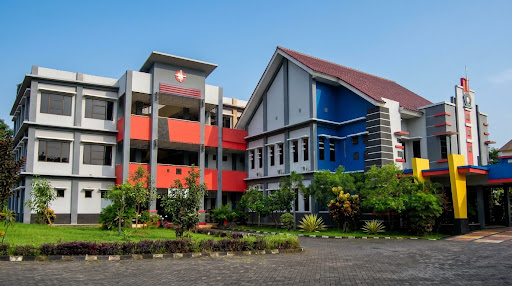
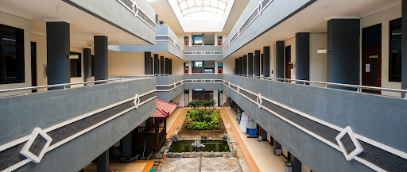
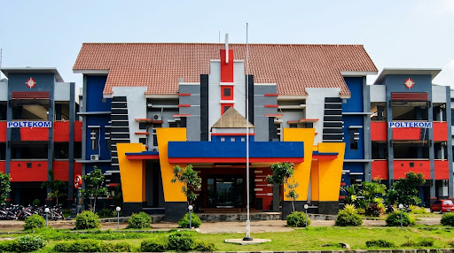

Gedung TerpaduArsitektur Modern POLTEKOM
Gedung Utama & Fakultas POLTEKOM
Tampak perspektif modern kampus dengan aksen merah dan biru, menaungi ruang laboratorium dan perkuliahan vokasi terintegrasi.

Fasilitas PerkuliahanAtrium Terbuka Asri
Gedung Kuliah & Atrium Terbuka POLTEKOM
Perspektif koridor dan atrium terbuka bertingkat di POLTEKOM yang sejuk dengan sirkulasi udara alami dan kolam asri.

Fasad IkonikPusat Administrasi & Rektorat
Gedung Rektorat & Gerbang Utama POLTEKOM
Tampak depan simetris ikonik Politeknik Kota Malang dengan pilar gagah cerah serta sistem pemantauan terpusat.
🏛️
POLTEKOM
Galeri Kampus
Kampus Aktif Terpantau
Aktif
🌡️
Kondisi UdaraSensor DHT22
Kenyamanan Ruangan (Suhu & Udara)
25°C • Sejuk & Pas
💧 Kelembapan 52%Sirkulasi baik
Kesimpulan:✅ Sangat nyaman untuk riset & praktikum
🛡️
Pencegahan KebakaranSensor MQ-2
Keamanan Asap & Gas Bocor
BERSIH (Tidak Ada Asap/Gas)
Sensor tidak menemukan adanya asap kebakaran atau kebocoran gas LPG.
Aman (0%)WaspadaBahaya
Status Proteksi:🛡️ Aman dari kebakaran & LPG
🫁
Kesehatan PernapasanSensor MQ-7
Kualitas Udara & Gas Beracun
BEBAS RACUN (100% Aman)
Kadar udara murni dan sangat bersih untuk dihirup oleh praktikan.
SehatNormalBerbahaya
Uji Toksisitas:🍃 Tidak terdeteksi Karbon Monoksida